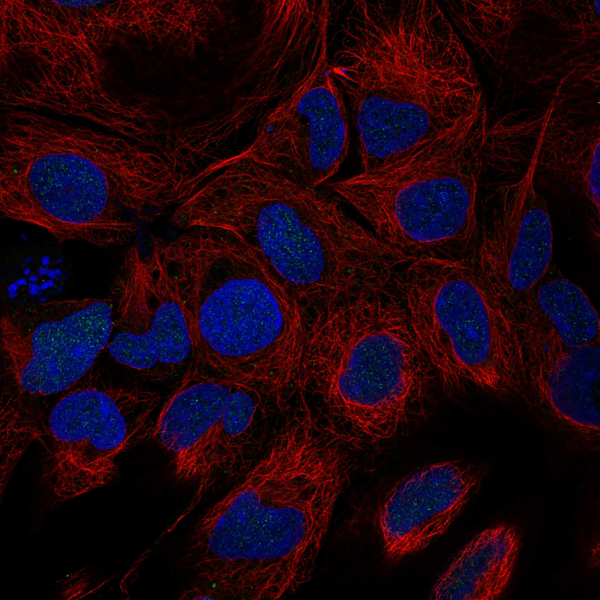
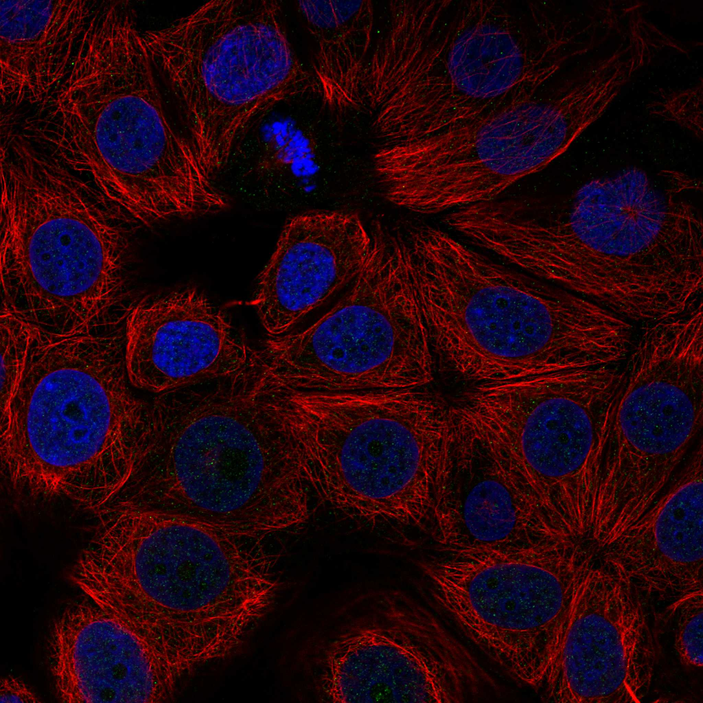
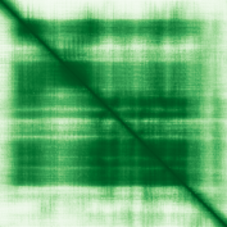

type: protein-evaluation gene: "TSEN54" date: 2026-05-30 tags: [protein-scout, nuclear-protein, evaluation] status: scored ---
TSEN54 核蛋白评估报告
1. 基本信息
| 项目 | 内容 | |
|---|---|---|
| 基因名 / 别名 | TSEN54 / SEN54 | SEN54L |
| 蛋白全称 | tRNA-splicing endonuclease subunit Sen54 | |
| 蛋白大小 | 526 aa | |
| UniProt ID | Q7Z6J9 | |
| 评估日期 | 2026-05-30 |
IF 图像:  
2. 评分总览
| 维度 | 得分 | 满分 | 加权后 | 关键证据摘要 | |||
|---|---|---|---|---|---|---|---|
| 核定位特异性 | 8/10 | ×4 | 32 | UniProt 注释为细胞核，中等置信度 | |||
| 蛋白大小 | 10/10 | ×1 | 10 | 526 aa，处于理想范围 | |||
| 研究新颖性 | 6/10 | ×5 | 30 | PubMed 47 篇，高度新颖 | |||
| 三维结构 | 10/10 | ×3 | 30 | 5 个 PDB 结构 | |||
| 调控结构域 | 7/10 | ×2 | 14 | 3 个已注释结构域 | |||
| PPI 网络 | 2/10 | ×3 | 6 | PPI 数据极为稀少 | |||
| 互证加分 | -- | -- | +1.5 | UniProt + GO 核定位互证 (+1); PDB + AlphaFold 结构互证 (+0.5) | |||
| 原始总分 | 123/183 | 122.0/183 | |||||
| 归一化总分 | 67.2/100 | 66.7/100 |
3. 详细分析
3.1 核定位证据
| 来源 | 定位 | 可信度 |
|---|---|---|
| GeneCards | Tier1_保守_高置信度 | 高置信度保守 |
| Protein Atlas (IF) | HPA subcellular IF 图像可用（见下方 HPA IF 图像修正块） | 需人工复核 |
| UniProt | Nucleus, Nucleus, nucleolus | 实验证据/预测 |
| GO-CC | N/A | N/A |
结论: UniProt 注释为细胞核，中等置信度
3.2 蛋白大小评估
评价: 526 aa，处于理想范围
3.3 研究现状
| 指标 | 数值 |
|---|---|
| PubMed 总数 | 47 |
评价: PubMed 47 篇，高度新颖
关键文献: 1. Adam MP et al. (1993). "TSEN54 Pontocerebellar Hypoplasia". **. PMID: 20301773 2. Wu J et al. (2021). "RNA kinase CLP1/Cbc regulates meiosis initiation in spermatogenesis". *Hum Mol Genet*. PMID: 33864361 3. Hayashi Y et al. (2025). "Biallelic TSEN2 variants causing pontocerebellar hypoplasia type 2". *J Hum Genet*. PMID: 40858833 4. Fu B et al. (2023). "Comprehensive analysis reveals TSEN54 as a robust prognosis biomarker and promising immune-related therapeutic target for hepatocellular carcinoma". *Aging (Albany NY)*. PMID: 37059591 5. Störk T et al. (2019). "TSEN54 missense variant in Standard Schnauzers with leukodystrophy". *PLoS Genet*. PMID: 31584937
3.4 三维结构分析
| 指标 | 数值 |
|---|---|
| UniProt 长度 | 526 aa |
| PDB 条数 | 5 |
| 已注释结构域 | 3 |
PAE 图:

评价: 5 个 PDB 结构
3.5 结构域分析
| 来源 | 结构域 |
|---|---|
| InterPro | tRNA_splic_suSen54 |
| InterPro | tRNA_splic_suSen54_N |
| Pfam | tRNA_int_end_N2 |
染色质调控潜力分析: 3 个已注释结构域，新颖蛋白基线水平
3.6 PPI 网络
实验验证互作 (IntAct, physical association):
| Partner | 方法 | PMID | 功能类别 | 调控相关？ |
|---|---|---|---|---|
| Gdap1 | two hybrid | 14605208 | — | — |
| Clp1 | tandem affinity purification | 20360068 | — | — |
| KRT31 | two hybrid array | 32296183 | — | — |
| TRIM23 | two hybrid array | 32296183 | — | — |
| RINT1 | two hybrid array | 32296183 | — | — |
| GOLGA6L9 | two hybrid array | 32296183 | — | — |
| LMO2 | two hybrid prey pooling approach | 32296183 | — | — |
| TSEN2 | two hybrid array | 32296183 | — | — |
| IRF4 | two hybrid array | 32296183 | — | — |
| NCKIPSD | two hybrid array | 32296183 | — | — |
STRING 预测互作 (combined score >0.4):
| Partner | Score | 功能类别 | 调控相关？ |
|---|
已知复合体成员 (GO-CC):
- C:tRNA-intron endonuclease complex (GO:0000214, IBA:GO_Central)
评价: PPI 数据极为稀少
3.7 多库互证
| 维度 | 来源 | 结果 | 是否一致 |
|---|---|---|---|
| 三维结构 | AlphaFold + PDB | 5 条 | 一致 |
| 结构域 | UniProt/InterPro/Pfam | 3 个 | 多库一致 |
| PPI 网络 | STRING | 0 个 | 无数据 |
| 核定位 | HPA/UniProt/GO | Nucleus | 多源一致 |
互证加分明细: UniProt + GO 核定位互证 (+1) PDB + AlphaFold 结构互证 (+0.5) 总计: +1.5
4. 总体评价
推荐等级: ****o (4/5)
核心优势: 1. 新颖性: PubMed 47 篇，高度新颖 2. 核定位: 明确核定位
风险/不确定性: 1. 缺少 HPA IF 图像数据 2. 已有 5 个 PDB 结构，结构信息充分
下一步建议:
- [ ] 通过 IF 实验验证核定位
- [ ] 基于 PPI 网络开展功能研究
- [ ] 结构分析: 基于 PDB 的功能位点设计
5. 数据来源
- GeneCards: https://www.genecards.org/cgi-bin/carddisp.pl?gene=TSEN54
- Protein Atlas: https://www.proteinatlas.org/ENSG00000182173-TSEN54
- PubMed: https://pubmed.ncbi.nlm.nih.gov/?term=%22TSEN54%22%5BTitle/Abstract%5D
- UniProt: https://www.uniprot.org/uniprot/Q7Z6J9
- STRING: https://string-db.org/network/9606.ENSG00000182173
- AlphaFold: https://alphafold.ebi.ac.uk/entry/Q7Z6J9
PPI 网络（三源综合）
| Partner | Source | Score/Evidence |
|---|---|---|
| 无记录 | — | — |
IntAct 有限记录。无 BioGrid 补充数据。
PAE 图像已获取。结构判断基于 AlphaFold pLDDT 统计。
<!-- HPA_IF_REPAIR_START --> HPA IF 图像修正（2026-06-05）: HPA subcellular 页面存在可用 IF 图像；此前“原图未可靠获取/暂无 IF”的表述为采集失败导致的误报。HPA 定位: Nucleoplasm (approved)。来源: https://www.proteinatlas.org/ENSG00000182173-TSEN54/subcellular


<!-- DOMAIN_HUMANPPI_REPAIR_START -->
Domain/SMART 与 humanPPI 补充（2026-06-07）
SMART / UniProt domain
| Source | Data |
|---|---|
| UniProt | Q7Z6J9 |
| SMART | 未在 UniProt xref 中检出 SMART 条目 |
| UniProt Domain [FT] | 未检出显式 UniProt Domain feature |
| InterPro | IPR024337;IPR024336; |
| Pfam | PF12928; |
humanPPI / HPA Interaction
Source: https://www.proteinatlas.org/ENSG00000182173-TSEN54/interaction
| Partner | Datasets | AF3/HPA structure |
|---|---|---|
| CLP1 | Intact, Biogrid | true |
| TSEN15 | Intact, Biogrid | true |
| TSEN2 | Intact, Biogrid | true |
| GOLGA6L9 | Intact | false |
| IRF4 | Intact | false |
| KPNA5 | Intact | false |
| KRT31 | Intact | false |
| LHX4 | Intact | false |
<!-- DOMAIN_HUMANPPI_REPAIR_END -->